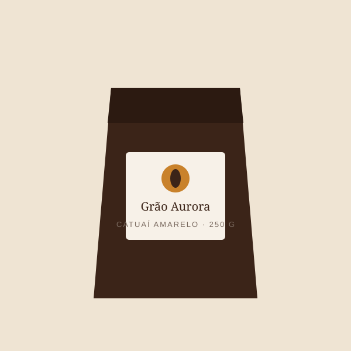

Esgotado
Café Especial Catuaí Amarelo — 250 g
Grãos 100% arábica da Serra da Mantiqueira, colhidos a 1.200 m de altitude.
R$ 79,90
ou 3x de R$ 26,63 sem juros
- Variedade
- Catuaí Amarelo
- Origem
- Serra da Mantiqueira (MG)
- Torra
- Média
- Notas
- Caramelo, frutas amarelas, chocolate ao leite
- Moagem
- Em grãos
- Peso
- 250 g
Sobre este café
Um café equilibrado, feito para o dia a dia.
Avaliações de clientes
Carregando avaliações…